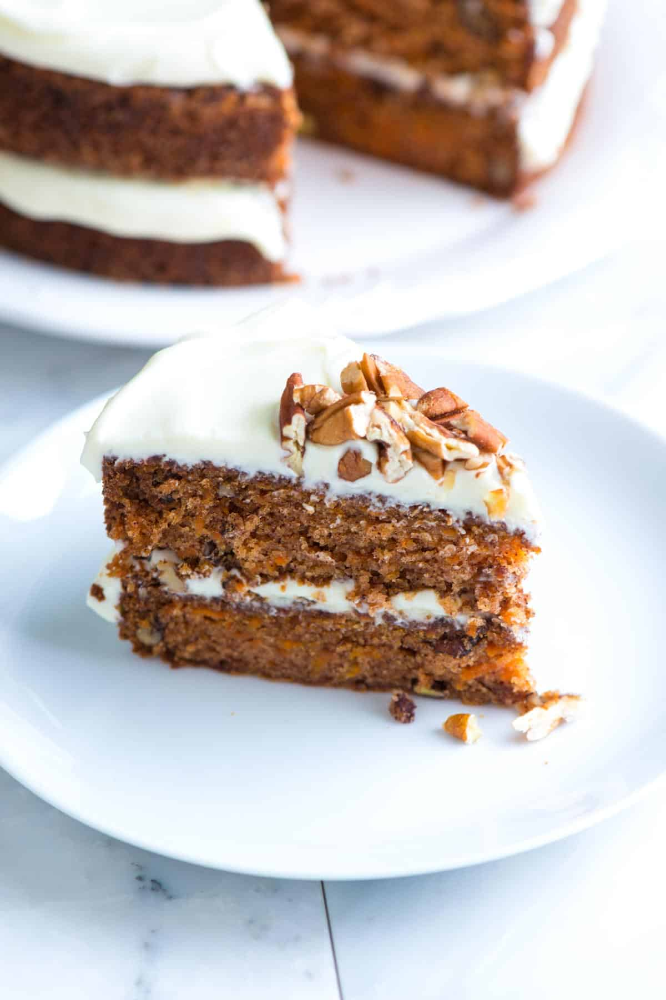

Easy Carrot Cake

This carrot cake is quick,easy to make,and utterly delicious. It wasn`t
until recently that i realized how much i love carrot cake.
This was not something I ate as a child. Thanks to this easy recipe, i fell
in love.
Not only is this the best-tasting carrot cake i`ve made,but it`s so easy to make.
I bet you have most of what you need to make it in your kitchen right now.
Key Carrot Cake Ingredients
-
I like using all-purpose flour,but you can subsitute some all-purpose
flour for whole wheat or white whole wheat flour. Swap the flour for your favourite
gluten-free flour blend for a gluten-free carrot cake.
-
Baking soda helps the cake to rise. I don`t add backing powder-this
cake recipe does not need it.
-
Salt,cinnamon,and vanilla extract make our cake taste amazing.
-
Oil keeps the cake nice and moist-any neutral-flavored oil will work.
Melted coconut oil works,too,but,the baked cake will have a light coconut flavor.We
use oil instead of butter when making
blueberry muffins,too.
-
Sugar makes the cake moist,light,and delicious. O love a conmbination of white and
brown sugar,but you can use one or the other.
-
Eggs give the cake structure.
-
Lots of carrot make this the best carrot cake. I like to hang-grate my carrots
since i prefer the texture,but you can use your food processor or buy pre-grated carrots from the store.
-
Pecans and raisins are optional! Some people love nuts and raisins in carrot cake,
while other cannot stand to add them. These are entirely optional,so go with what you love.
How to Make Carrot Cake from Scratch, You`ve Got This!
The method for this carrot cake recipe could not be simpler! If you have a couple
of bowls and can stir ingredients togeher,you can make this cake!.
-
Dry ingredients in one bowl,wet ingredients in anouther: I like to
whisk my dry ingredients together in one bowl until they are well blended.
Than, I whisk all the wet ingredients togeher in anouther bowl.
-
Fold the dry and wet ingredients together: Then i switch to a rubber spatula or
or large spoon and fold the two - wet and dry ingredients - together until I don`t see any large streaks
of flour.
-
Add carrot, nuts, and raisins: When I`ve got the batter ready, I fold in
the carrots, and if I`m using them, the nuts and raisins.

Tips for Baking Carrot Cake
-
I use two 8-inch or 9-inch light metal baking pans for this recipe. If you use the smaller 8-inch
round pans, ensure the pan is at least 2 inches deep.
-
Butter and flor your pans or grease lightly and line with parchment paper.
-
You cann tell carrot cake is ready to come out of the oven when it`s risen and
a bit bouncy when you lightly touch it - I use one or two fingers and lightly
push. If you leave a dent in the cake, it needs a bit more time.
-
Cool the cake layers completely bafore frosting. I like to cool them in the pans for 15 minutes
and then turn them onto a cooling rack to cool completely.

You Will Need
For carrot cake
2 cups (260g) all-purpose flour
2 teaspoon baking soda
1/2 teaspoonfine sea salt
1 1/2 teaspoon ground cinnamon
1 1/4 cops (295ml) vegetable oil
1 cup (190g) lightly packed brown sugar
1 teaspoon vanilla extract
4 large eggs,at room temperature
3 cups (120g) coarsely chopped pecans
3 cups (300g) grated peeled carrots,5 to 6 medium carrots
1/2 cup (70g) raisins
Direction
MAKE THE BATTER
Position a rack in the middle of the oven. Preheat the oven to 350F (176C).
Grease two 9-inch round cake pans, line the botton with parchment paper, and then grease the top.
Or greaseand flour the bottom and sidesof both pans.
Whisk flour, backing soda,salt,and cinamon in a medium until very well blended.
In a separated bowl, whisk the oil, granulated sugar, brown sugar, and vanilla.
Add the eggs,one at the time,whisking after each one.
Switch to a large rubber spatula. Scrape the sides and bottom of the bowl,
then add the dry ingredients in three parts, gently strring untill they disappear
and the batter is smooth.
Stir in the carrots, nuts, and raisins.
BAKE CAKE
Divide the cake batter between the prepare cake pants.
Bake until the tops of thhe cake layers are springy when touched and when a toothpick
into the center of the cake comes out clean, 35 to 45 minutes.
Cool the cakes in the pans for 15 minutes, then careffuly turn the cake layers
out onto cooling racks. Remove the parchment paper and cool completel. If you
find that a cake layers is sticking to the bottom of the pan, leve the cake pan
upside down and allow gravity to do its thing.

More Classic Baking Recipes